원자력기사 (2010-09-11 기출문제)
1과목: 원자력기초
1. 다음 중 출력결손을 계산하기 위해 고려해야 할 반응도 변수가 아닌 것은?
- 핵연료 온도계수
- 기포계수
- 미분 제어봉가
- 감속재 온도계수
(정답률: 알수없음)

2. 미임계 원자로에서 미임계 증배계수(M)와 유효증배계수(Keff)의 관계를 올바르게 표현한 것은?
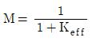
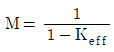
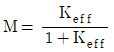
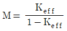
(정답률: 알수없음)
3. 원자로 출력은 유효증배계수(Keff)를 변화시켜 조절한다. 유효증배계수와 관련된 여섯 가지 인자 중에서 어느 인자를 조절하는 것이 가장 용이한가?
- 열중성자 이용률
- 열중성자 비누설확률
- 공명이탈확률
- 속분열인자
(정답률: 알수없음)
4. U235의 거시적 분열단면적은? (단, U235의 밀도는 18.9/cm3, U235의 미시적 분열단면적은 580b이다.)
- 약 28㎝-1
- 약 35㎝-1
- 약 44㎝-1
- 약 52㎝-1
(정답률: 알수없음)
5. 다음 괄호 안에 들어갈 말로 알맞은 것끼리 연결한 것은?
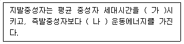
- 증가, 낮은
- 증가, 높은
- 감소, 낮은
- 감소, 높은
(정답률: 알수없음)
6. 다음 중 핵반응에서 보존되지 않는 것은?
- 반응 전후 질량
- 반응 전후 전하량
- 반응 전후 핵자 수
- 반응 전후 운동량
(정답률: 알수없음)
7. 질량수가 같으나, 양자수와 중성자수가 다른 것은?
- 동위원소(Isotope)
- 동중성자원소(Isotone)
- 동중원소(Isobar)
- 핵이성체(Isomer)
(정답률: 알수없음)
8. U235 의 핵분열 시 방출되는 에너지는 약 200MeV에 달하지만, 그 형태가 다양하다. 다음 중 가장 큰 것은?
- 즉발 감마선으로 방출되는 에너지
- 핵분열 생성물의 운동에너지
- 핵분열 생성물의 알파붕괴 시 방출되는 에너지
- 핵분열 생성물의 베타붕괴 시 방출되는 에너지
(정답률: 알수없음)
9. 원자로 노심의 반사체에 대한 다음 설명 중 틀린 것은?
- 중수로나 경수로는 중성자 누설을 최소화하기 위해 경수 또는 중수를 반사체로 사용한다.
- 반사체 영역에서 열중성자속은 노심 가장자리 열중성자속보다 큰 값을 갖다가 노심에서 멀어질수록 감소한다.
- 반사체를 사용하면 노심 출력분포가 평탄화된다.
- 반사체 영역에서 속중성자속과 열중성자속은 크기만 다를 뿐 분포형태는 동일하다.
(정답률: 알수없음)
10. 어떤 노심이 영출력 임계상태에 있다. 이 경우 운전원이 제어봉을 10step인출하였다면, 원자로 주기는? (단, 제어봉가는 –5pcm/step, 지발중성자분율 βeff=0.0065, λ=0.1sec-1)
- 40sec
- 80sec
- 120sec
- 200sec
(정답률: 알수없음)
11. 다음 중 원자로 출력변화 시 반응도 변화에 가장 빠른 변화를 주는 것은?
- 감속재 온도변화
- 도플러 효과
- 붕산농도 변화
- 냉각재 유량효과
(정답률: 알수없음)
12. 전출력 운전 중 원자로가 정지되었다. 다음 중 핵분열 생성물의 부반응도 영향이 가장 큰 시점은?
- 정지 직후
- 정지 후 20분
- 정지 후 10시간
- 정지 후 80시간
(정답률: 알수없음)
13. 좋은 감속재가 갖추어야 할 조건 중 틀린 것은?
- 거시적 산란단면적이 커야 한다.
- 거시적 흡수단면적이 커야 한다.
- 평균 대수에너지감쇄계수가 커야 한다.
- 열전달 특성이 우수해야 한다.
(정답률: 알수없음)
14. 반경(R), 높이(H)인 원통형 원자로에서 기하학적 버클링을 바르게 표현한 것은?
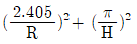
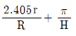
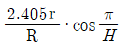
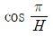
(정답률: 알수없음)
15. 다음 중 즉발중성자 수명 대부분을 차지하는 것은?
- 방출시간
- 핵분열시간
- 감속시간
- 확산시간
(정답률: 알수없음)
16. 핵연료 농축도가 조금 증가하였다. 이 경우 무한증배계수를 구성하는 인자 중 영향이 가장 적은 것은?
- 재생계수
- 속핵분열계수
- 공명이탈확률
- 열중성자이용률
(정답률: 알수없음)
17. 가압경수로에서 노심초기에 냉각재계통의 붕산농도를 높게 하는 이유는?
- 핵연료 잉여반응도 보상
- 감속재 온도계수를 부(-)로 유지
- 중성자속 평탄화
- 제어봉 반응도 값을 최대화
(정답률: 알수없음)
18. 열출력 1,000MW로 운전하다가 원자로에 -0.5%△K/K의 반응도를 주입하였다. 이 경우 즉발강하는?
- 약 451MW
- 약 568MW
- 약 735MW
- 약 810MW
(정답률: 알수없음)
19. 다음 설명 중 틀린 것은?
- 126C의 무게는 6개의 양자, 6개의 중성자 및 12개의 전자의 무게를 합한 것보다 무겁다.
- 핵력은 10-15m 정도의 근거리에서만 강하게 작용한다.
- 핵력은 전하에 무관하다.
- 여기상태에 있는 핵이 감마선을 방출하고 기저상태로 이동할 때 핵이성체 전이라 한다.
(정답률: 알수없음)
20. 다음 그림은 6.67eV 공명에너지에 대한 의 미시적 포획 단면적을 그린 것이다. 핵연료 온도가 감소할 경우에 대한 설명으로 맞는 것은?
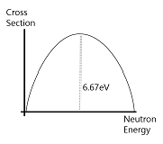
- 단면적 곡선 아래의 면적은 감소하고, 첨두값도 감소한다.
- 단면적 곡선 아래의 면적은 일정하고, 첨두값은 감소한다.
- 단면적 곡선 아래의 면적은 감소하고, 첨두값은 증가한다.
- 단면적 곡선 아래의 면적은 일정하고, 첨두값은 증가한다.
(정답률: 알수없음)
2과목: 핵재료공학 및 핵연료관리
21. 가압경수로형 원전에서 냉각재의 pH를 조절하기 위해 주로 사용하는 물질은?
- 6LiOH
- 7LiOH
- 23NaOH
- 24NaOH
(정답률: 알수없음)
22. 다음 중 천연상태에 존재하는 우라늄 동위원소가 아닌 것은?
- U233
- U234
- U235
- U238
(정답률: 알수없음)
23. 우라늄 농축방법에 대한 설명으로 맞는 것은?
- 기체원심분리법은 기체확산법에 비해 소요전력이 적다.
- 레이저동위원소 분리법에서는 을 여기상태로 만든다.
- 최초로 상업화된 우라늄 농축공정은 기체 원심분리법이다.
- 화학적 분리공정이 주로 이용된다.
(정답률: 알수없음)
24. 우라늄의 농축에 소용되는 비용을 기술하기 위한 목적으로 사용되는 특별한 단위는 무엇인가?
- Special Drawing Right
- Separative Work Unit
- United States Dollar
- Value Function
(정답률: 알수없음)
25. 열효율이 34%인 1,400MWe급 가압경수로에서 연 평균 사용후연료의 발생량은? (단, 이용률은 80%이고, 평균 방출연소도는 1MTU(Metric Tone of Uranium) 당 45,000MWthD로 가정한다.)
- 약 11MTU
- 약 15MTU
- 약 27MTU
- 약 45MTU
(정답률: 알수없음)
26. 국내 가압경수로형 핵연료 집합체의 구성품이 아닌 것은?
- 계측기 안내관
- 채널박스
- 중간 지지격자
- 하단 고정체
(정답률: 알수없음)
27. 원전에서 발생하는 기체폐기물을 감쇄탱크나 활성탄 흡착기로 처리할 때, 처리효율이 가장 낮은 방사성 핵종은?
- Xe133
- Xe138
- Kr85
- Kr88
(정답률: 알수없음)
28. 다음 중 펠렛-피복재 상호작용(PCI)에 의한 핵연료 손상을 일으키는 주요 핵분열 생성물은?
- Xe
- Kr
- I
- Sm
(정답률: 알수없음)
29. 사용 후 연료를 Purex 공정으로 재처리 시 사용되는 용해는?
- Methyl Isobutyl Ketone
- Tributyl Phosphate
- 2-Methyl-2Pentanone
- Sodium Dichromate
(정답률: 알수없음)
30. 다음 중 설명이 틀린 것은?
- 핵분열생성 기체인 제논, 크립톤은 열전도도가 좋다.
- 핵분열생성 기체가 핵연료 펠렛 내부에 있을 때는 팽윤을 일으킨다.
- 핵분열생성 기체가 플레넘으로 빠져나오면 연료봉 내압을 높인다.
- 핵분열생성 기체는 중성자 경제성에 영향을 미친다.
(정답률: 알수없음)
31. 중수로와 경수로 핵연료 제조공정에는 일부 차이가 있다. 다음 중 중수로 핵연료 제조공정 중에 나타나지 않는 우라늄 화합물로만 묶은 것은?
- U3O8, UO2
- UO2, UF6
- UF4, UF6
- UF6, U3O8
(정답률: 알수없음)
32. 사용 후 연료의 습식처리에 있어서 임계안전성에 영향을 주는 인자에 해당하지 않는 것은?
- 피복재의 성질과 농도
- 감속재의 성질과 농도
- 핵분열물질 지상용기의 기하학적 형태
- 핵분열물질을 싸고 있는 반사체의 성질과 두께
(정답률: 알수없음)
33. 지하 매질에서의 이동속도와 지하수의 이동속도 사이의 비는 지연계수로 정의된다. 모래의 세슘에 대한 지연계수는? (단, 모래의 겉보기 밀도는 2.8g/cm3, 공극률 0.21, 세슘의 분배계수(Kd)는 이다.)
- 3
- 31
- 301
- 401
(정답률: 알수없음)
34. 방사성폐기물의 육지처분시스템의 3가지 주요구성요소가 아닌 것은?
- 기후특성
- 지질환경
- 처분시설
- 폐기물 특성
(정답률: 알수없음)
35. 기체폐기물처리계통에서 사용하는 활성탄 흡착기의 유기 요오드 제거효율을 높이기 위해 활성탄에 함침시키는 물질은?
- EDTA
- H2O2
- N2H4
- TEDA
(정답률: 알수없음)
36. 국내 가압경수로형 원전의 사용 후 연료 습식저장조(Spent Fuel Pool)에 대한 설명으로 맞는 것은?
- 손상된 핵연료도 저장할 수 있다.
- 자연대류 방식으로 붕괴열을 제거한다.
- 저장 랙(Rack)에는 중성자 흡수재를 적용한다.
- 저장조 상부를 콘크리트 판으로 차폐한다.
(정답률: 알수없음)
37. 가압경수로형 원전에서 발생된 사용후연료의 조성에 관한 설명으로 틀린 것은?
- Cs135는 Cs137보다 반감기가 길다.
- I129는 반감기가 긴 핵분열 생성물 핵종이다.
- 수백년 후에는 핵분열 생성물의 방사능이 초우라늄 핵종의 방사능보다 커진다.
- 핵분열 생성물 핵종은 대부분 반감기가 1년 미만이다.
(정답률: 알수없음)
38. 순환핵연료주기(Closed Fuel Cycle)에 관한 설명으로 가장 거리가 먼 것은?
- 고준위폐기물 중 핵분열생성물 핵종의 양이 줄어든다.
- 우라늄의 이용효율이 증가된다.
- 현재 혼합산화물(MOX) 핵연료를 사용하는 국가가 있다.
- 회수된 플루토늄을 고속증식로에서 이용할 수 있다.
(정답률: 알수없음)
39. 일반적으로 냉각재의 수소농도는 화학 및 체적제어계통에서 수소압력을 조절함으로서 조절된다. 이와 같이 수소농도를 조절하는 목적은?
- 리튬농도 제어
- 붕소농도 제어
- CRUD 제거
- 용존산소농도 제어
(정답률: 알수없음)
40. 두 가지 동위원소 화합물이 밀폐된 용기 내에 존재할 때, 가벼운 성분의 기체분자들의 평균 운동속도가 무거운 성분의 기체분자보다 크다는 원리를 이용한 우라늄 동위원소 분리법은?
- 기체확산법
- 원심분리법
- 화학교환법
- 레이저분리법
(정답률: 알수없음)
3과목: 발전로계통공학
41. 원자로 운전조건에서 장시간 사용된 핵연료 지르칼로이(Zircaloy) 피복재에서 발생하는 문제가 아닌 것은?
- 응력부식균열
- 수소취화
- 조사크리프
- 팽윤
(정답률: 알수없음)
42. 핵연료 펠렛-피복재 상호작용(PCI)에 의한 핵연료 파손을 억제하는 방법이 아닌 것은?
- 핵연료 피복재 응력 감소
- 핵연료 온도 감소
- 핵분열 기체 방출 감소
- 핵연료 피복재 내경 감소
(정답률: 알수없음)
43. 핵연료 제작 시 펠렛과 피복재 사이에 일정한 간극(Gap)을 유지하는 이유가 아닌 것은?
- 펠렛과 피복재의 열팽창 수용
- 펠렛의 부피변화 수용
- 핵분열생성물 기체 수용
- 핵분열 생성열 전달 증진
(정답률: 알수없음)
44. 원자로 압력용기의 중성자 조사취화에 영향을 미치는 인자가 아닌 것은?
- 원자로용기 화학조성
- 조사 속도
- 조사 온도
- 조사 압력
(정답률: 알수없음)
45. 증기발생기 튜브에서 가장 많이 발생하는 손상 메커니즘은?
- 피로
- 마모침식
- 응력부식균열(SCC)
- 프레팅
(정답률: 알수없음)
46. 다음 펌프의 공동현상과 방지대책에 대한 설명 중 틀린 것은?
- 발생 시 펌프 회전체 주위 유체압력 급감
- 발생 후 펌프 회전 체 침식 및 펌프 진동 발생
- 방지하기 위해 펌프 흡입구 압력상승 필요
- 방지하기 위해 펌프 흡입구 포화압력 상승 필요
(정답률: 알수없음)
47. 다음 그림은 국내 원자력발전소의 2차 계통에 대한 TS선도이다. 구간별 과정을 틀리게 기술한 것은? (단, 유체는 증기발생기 → 고압 터빈 → 습분 분리 재열기 → 저압터빈 → 복수기 → 저압 급수가열기 → 급수펌프 → 고압 급수가열기 → 증기발생기 순으로 유로 형성)
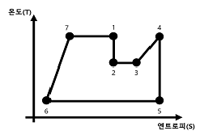
- 1 ~ 2 구간 : 고압터빈 과정
- 2 ~ 4 구간 : 습분 분리 재열기 과정
- 4 ~ 5 구간 : 저압터빈 과정
- 5 ~ 6 구간 : 저압 급수가열기 과정
(정답률: 알수없음)
48. 냉각재(Coolant)의 주요 요구조건에 대한 설명 중 틀린 것은?
- 높은 열전도도 및 비열
- 높은 유도 방사능
- 낮은 용융 온도
- 낮은 중성자 흡수 단면적
(정답률: 알수없음)
49. 다음 핵연료 원료물질(Fuel Material)들로 연결된 것은?
- 토륨(Th232), 우라늄(U235)
- 토륨(Th232), 우라늄(U238)
- 우라늄(U238), 플루토늄(Pu239)
- 우라늄(U235), 플루토늄(Pu239)
(정답률: 알수없음)
50. 원전 핵연료인 이산화우라늄(UO2)의 특성에 대한 설명 중 틀린 것은?
- 기계적 성질은 상온에서 깨지기 쉽다.
- 열전도도는 밀도에 따라 변한다.
- 열전도도는 온도가 상승할수록 증가한다.
- 파괴강도는 기공도가 낮고 결정립이 작을수록 크다.
(정답률: 알수없음)
51. 탄성한계 이내의 하중일지라도 반복적으로 작용시키면 파괴된다. 이러한 파괴를 무엇이라 부르는가?
- 충격파괴
- 피로파괴
- 저온취성
- 크리프
(정답률: 알수없음)
52. 천연우라늄을 사용하여 3% 농축하였을 때, 폐기 농축도가 0.23%였다면 종단폐기물과 최종 생성물의 무게 비(W/P)는?
- 약 4.8
- 약 5.8
- 약 10.4
- 약 12.4
(정답률: 알수없음)
53. 핵연료봉은 헬륨기체(He)를 약 20kg/cm2압력으로 충전하여 제작한다. 핵연료봉 내부의 압력 거동을 바르게 기술한 것은?
- 연료가 손상되지 않는 한 주기말까지 그대로 유지한다.
- 연소가 진행될수록 압력이 증가한다.
- 연소가 진행될수록 보다 낮은 상태로 감압된다.
- 연소가 진행될수록 압력이 감소하다가 일정하게 된다.
(정답률: 알수없음)
54. 원자로는 가압열충격(PTS, Pressurized Thermal Stress)의 발생을 최소화하도록 제작 및 운전하여야 한다. 다음 중 PTS 발생을 줄이기 위한 접근법이 아닌 것은?
- 원자로 압력용기 제작 시 구리(Cu) 함량 증가
- 노심 설계 시 저누설 장전모형으로 연료를 배치
- 냉각률을 적게 하여 운전
- 약 50℃ 저온에서 냉각재계통 압력을 정격출력 압력 이하로 운전
(정답률: 알수없음)
55. 국내 원전의 증기발생기에 관한 설명 중 틀린 것은?
- 튜브 내부(1차측)에는 방사능을 띈 냉각재가 흐른다.
- Shell side(2차측)에는 물이 2상(Two Phase)유동형태로 존재한다.
- 튜브는 부식에 강한 인코넬 합금을 사용한다.
- 터빈에 공급되는 과열 증기를 생성한다.
(정답률: 알수없음)
56. 다음 중 유량 측정장치가 아닌 것은?
- 벤츄리 관
- 오리시프
- 노즐
- 피토 관
(정답률: 알수없음)
57. 핵연료 피복재의 재질 특성 중 기본요건이 아닌 것은?
- 열전달이 잘 이루어지도록 해야 한다.
- 중성자 감속능이 높아야 한다.
- 핵분열생성물과 화학적 반응성이 낮아야 한다.
- 중성자 흡수능이 낮은 물질이어야 한다.
(정답률: 알수없음)
58. 핵연료 고밀화(Densification)에 영향을 미치는 인자에 대한 설명 중 틀린 것은?
- 입도 : 입도가 크면 입계까지 확산되는 거리가 길므로 고밀화 현상은 크다.
- 기공의 모양 : 구형의 기공이 고밀화에 대하여 안정하다.
- 핵분열 속도 : 핵분열 속도가 크면, 고밀화 현상은 가속된다.
- 기공도와 기공크기의 분포 : 미세기공은 빠른 시간 내에 고밀화가 진행된다.
(정답률: 알수없음)
59. 다음 중 틀린 것은?
- 가공 : 핵연료 물질에 포함된 우라늄 등의 비율을 높이기 위하여 물리적, 화학적 방법으로 핵연료 물질을 처리하는 것이다.
- 변환 : 핵연료 물질을 화학적 방법으로 처리하여 가공하기에 적합한 형태로 만드는 것이다.
- 선행핵주기 : 우라늄 광석의 채광 및 정련에서 성형가공까지 주기를 말한다.
- UF4를 Green Sault라고 한다.
(정답률: 알수없음)
60. 100% 출력운전 중 냉각재가 단상(Single Phase)을 유지하고 있다. 초기 노심 펠렛 중심선에서부터 냉각재 유로의 중심선까지 온도 구배 중에서 온도편차가 가장 큰 구간은?
- 펠렛 중심선에서 펠렛 가장자리까지
- 지르칼로이 피복재
- 피복재 부식막
- 냉각재 층(Layer)
(정답률: 알수없음)
4과목: 원자로 안전과 운전
61. 비상노심냉각계통 설계기준에 포함되지 않는 것은?
- 핵연료 중심부 최대 온도를 제한하고 있다.
- 연료 피복재 최대 산화율을 제한하고 있다.
- 최대 수소발생율을 제한하고 있다.
- 사고 냉각 가능한 기하학적 구조를 유지하도록 규정하고 있다.
(정답률: 알수없음)
62. 원자로 정지여유도에 대한 설명 중 틀린 것은?
- 제어봉을 전부 삽입하였을 때, 부반응도를 원자로 정지여유도라 한다.
- 원자로 정지여유도의 측정은 일반적으로 초기 임계일 때 실시한다.
- 원자로 내에서 핵분열이 진행함에 따라 정지여유도는 적어진다.
- 측정법으로는 제어봉 낙하법 등이 있다.
(정답률: 알수없음)
63. 출력운전 중 증기발생기의 수위수축(Shrink)현상의 원인이 되는 것은?
- 주증기 격리밸브 차단
- 터빈부하의 급격한 증가
- 증기덤프 동작
- 증기발생기 보호밸브 개방
(정답률: 알수없음)
64. 핵연료봉 표면과 냉각재 사이의 열전달 특성을 나타내는 열전달 곡선에서 열전달이 가장 잘 이루어지는 영역은?
- 단상 액체 자연대류
- 과냉 핵비등
- 포화 핵비등
- 부분 막비등
(정답률: 알수없음)
65. 과소감속(Under Moderated Reactor)에서 원자로 출력증가 시 출력을 안정화시키려는 원자로 고유안정성에 도움이 되는 변수를 올바르게 연결한 것은?
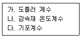
- 가, 나
- 나, 다
- 가, 다
- 가, 나, 다
(정답률: 알수없음)
66. 원전에서 사용하는 압력용기에 관한 설명 중 틀린 것은?
- 최대 운전압력에 안전여유도를 더하여 설계압력을 결정한다.
- 최대 운전압력은 일반적으로 정상 운전압력보다 5% 정도 증가한 압력이다.
- 설계압력은 최대 운전압력보다 10% 이상에서 정해진다.
- 설계압력은 경우에 따라 최대 운전압력과 동일할 수 있다.
(정답률: 알수없음)
67. 가압경수로와 비등경수로와의 공통점이 아닌 것은?
- 경수를 냉각재 및 감속재로 사용한다.
- 저농축 우라늄을 연료로 사용한다.
- 고온 고압의 가열한 물을 수증기로 만들어 전기를 생산한다.
- 원자로 계통과 터빈계통이 격리되어 있다.
(정답률: 알수없음)
68. 가연성 독물질의 역할이 아닌 것은?
- 반경방향 중성자속 분포 조정
- 노심 내 중성자 증배상태 감시값 보정
- 초기노심 장전 시에 잉여반응도 보상
- 감속재 온도계수를 부(-)로 유지
(정답률: 알수없음)
69. 화학 및 체적제어계통 기능에 대한 설명 중 틀린 것은?
- 냉각재 수질개선, 방사능 준위 및 붕소농도 조절
- 냉각재 보충
- 냉각재 펌프에 밀봉주입수 공급
- 격납용기 내 재순환 집수조에 NaOH 첨가 및 대기압력 제어
(정답률: 알수없음)
70. 공학적 안전설비가 아닌 것은?
- 고압 안전주입계통
- 비상붕산 주입계통
- 격납용기 격리계통
- 보조급수계통
(정답률: 알수없음)
71. 국제원자력기구의 사건 등급체계(INES)에 대한 설명 중 틀린 것은?
- 1등급 : 운전제한 범위를 벗어난다.
- 3등급 : 심각한 고장으로 심층방어가 손상된다.
- 4등급 : 소위 위험사고로 노심의 상당수준이 손상된다.
- 6등급 : 심각한 사고로 방사성물질 상당량이 외부로 방출된다.
(정답률: 알수없음)
72. 대형 냉각재 상실사고(LBLOCA)의 진행단계 중 다음 괄호 안에 알맞은 것은?
- 재충수(Refill)
- 냉각(Cooling)
- 임계 흐름(Critical Low)
- 비등(Boiling)
(정답률: 알수없음)
73. 다음 중 TMI-2 사고 시에 발생한 주된 인적 오류는?
- 주급수 과잉공급
- 안전주입 수동 차단
- 원자로 수동 정지
- 노심냉각수 과잉공급
(정답률: 알수없음)
74. 다음 중 가압경수로에서 잔열제거계통(정지냉각계통) 흡입원으로 틀린 것은?
- 냉각재 고온관
- 격납용기 재순환 집수조
- 냉각재계통 저온관
- 핵연료 재장전수(저장)탱크
(정답률: 알수없음)
75. 다음 중 원자로 임계 진입 시 주의사항으로 틀린 것은?
- 가압기 기포형성 후 원자로 임계에 도달한다.
- 붕소희석 및 제어봉 인출을 동시에 수행하여 임계에 진입한다.
- 제어봉 삽입한계 이상에서 원자로 임계에 도달한다.
- 원자로 임계 시 기동율은 제한치 이내에서 임계에 도달한다.
(정답률: 알수없음)
76. 독물질인 제논과 사마리움에 대한 설명 중 틀린 것은?
- 원자로를 장시간 정지하면, 사마리움 농도는 증가 후 일정하게 유지된다.
- 원자로 정지 후 약 10시간 정도에서 제논 농도는 최고치에 도달한다.
- 운전 중 사마리움 Nd149로부터 방사성 핵종의 붕괴에 의해 생성된다.
- 운전 중 제논은 대부분 I135로부터 방사성 핵종의 붕괴에 의해 생성된다.
(정답률: 알수없음)
77. 방사성폐기물 관련 설명 중 바르게 연결한 것은?
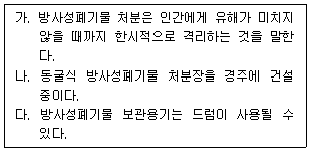
- 가, 나
- 나, 다
- 가, 다
- 가, 나, 다
(정답률: 알수없음)
78. 원전에서 증기발생기 튜브 파열사고(SGTR) 발생 시 나타날 수 있는 증상을 바르게 연결한 것은?
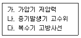
- 가, 나
- 나, 다
- 가, 다
- 가, 나, 다
(정답률: 알수없음)
79. 가압경수로에서 설계조건에 따른 사고분류(ANSI N18.2)에 대한 설명 중 틀린 것은?
- Condition I : 정상출력운전, 발전소 가열 및 냉각
- Condition II : 외부전원상실, 냉각재 강제유량의 부분적 상실
- Condition III : 핵연료 취급 사고, 제어봉 구동기구 보호관 파열
- Condition IV : 대형 냉각재 상실사고, 주급수관 파단
(정답률: 알수없음)
80. 다음 중 냉각재 상실사고(LOCA)에 대한 설계기준들을 바르게 연결한 것은?
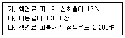
- 가, 나
- 나, 다
- 가, 다
- 가, 나, 다
(정답률: 알수없음)
5과목: 방사선이용 및 보건물리
81. 전리함에 대한 설명 중 틀린 것은?
- 대부분 전류형 대신에 전압형의 펄스형태로 운영된다.
- 동작전압은 이온쌍의 재결합이 방지되고, 2차 전자가 발생하지 않는 전압범위에서 설정된다.
- 기체증배인자는 1이다.
- 가압형 전리함(PIC)은 환경방사선 측정에 많이 사용된다.
(정답률: 알수없음)
82. GM 계수기에 대한 설명 중 틀린 것은?
- 플라토우의 폭은 GM계수기에 내장된 기체의 종류, 압력 등에 따라 차이가 없다.
- 보상형 GM의 경우, 주로 선량율 측정에 사용된다.
- 불감시간은 대략적으로 100 ~ 400의 범위이나 계측기 내에 들어있는 기체의 종류나 압력 등에 따라 다소 차이가 있다.
- 소멸기체 대신에 외부전자 회로를 이용하는 외부소멸법의 경우 불감시간이 짧아지는 장점이 있다.
(정답률: 알수없음)
83. G – Value 에 대한 정의로 맞는 것은?
- 방사선 에너지 10eV 흡수 당 생성되는 원자나 분자의 수
- 방사선 에너지 100eV 흡수 당 생성되는 원자나 분자의 수
- 방사선 에너지 10KeV 흡수 당 생성되는 원자나 분자의 수
- 방사선 에너지 100KeV 흡수 당 생성되는 원자나 분자의 수
(정답률: 알수없음)
84. 개인피폭선량계의 성질로서 틀린 것은?
- 방향 의존성이 커야 한다.
- 기계적 강도가 좋고, 가격이 저렴해야 한다.
- 선량-반응의 선형성이 유지되어야 한다.
- 측정 가능한 선량범위가 넓어야 한다.
(정답률: 알수없음)
85. 시료를 1분간 측정한 결과 10,000counts를 얻었다. 상대오차는 몇 %인가?
- 1%
- 3.3%
- 5%
- 10%
(정답률: 알수없음)
86. 다음 중 순수 베타선 방출핵종이 아닌 것은?
- 삼중수소
- 탄소
- 니켈
- 크립톤
(정답률: 알수없음)
87. 다음의 양과 단위의 연결 중 맞는 것은?
- 흡수선량 : Sv
- 공기커마 : Gy
- 유효선량 : Bq
- 등가선량 : C/kg
(정답률: 알수없음)
88. 다음 중 베타선과 물질과의 상호작용으로 맞는 것은?
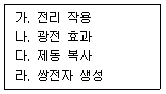
- 가, 나
- 가, 다
- 나, 다
- 나, 라
(정답률: 알수없음)
89. 차폐체를 이용하여 감마선의 강도를 1/1,000으로 줄이고자 한다. 차폐체의 두께는 근사적으로 얼마여야 하는가? (단, 차폐체의 질량감쇠계수는 0.⑤cm2/gr, 밀도는 10g/cm3이며, 축적인자는 무시한다.
- 96cm
- 11.1cm
- 13.8cm
- 16.2cm
(정답률: 알수없음)
90. 방사선의 차폐방법에 관한 설명 중 틀린 것은?
- 속중성자의 차폐에는 수소원자가 많이 함유된 물, 파라핀이 이용된다.
- 감마선은 원자번호가 큰 물질로 차폐한다.
- 알파선은 투과력이 약하기 때문에 고무장갑으로도 충분히 차폐된다.
- 에너지가 높은 베타선은 전면에 철이나 납으로 후면에 플라스틱 판으로 차폐한다.
(정답률: 알수없음)
91. 배가선량의 설명 중 맞는 것은?
- 자연돌연변이율을 2배로 하는데, 요하는 방사선량이다.
- 배가선량이 크다는 것은 방사선의 영향이 크다는 것이다.
- 사람의 배가선량은 15 ~30Gy이다.
- 배가선량이 클수록 유전적 영향은 일어나기 쉽다.
(정답률: 알수없음)
92. 다음 설명 중 틀린 것은?
- 결정론적 영향은 대체로 급성이며, 증상의 특이성이 있고, 증상의 심각도가 피폭선량에 비례한다.
- 피부, 수정체 등의 장기에 등가선량한도를 별도로 두는 이유 중의 하나는 이들 장기의 결정론적 영향을 방지하기 위함이다.
- 방사선 방호목표는 경제적 인자를 합리적으로 고려하여 확률적 영향을 방지함을 목적으로 하고 있다.
- 확률적 영향의 발생확률은 선량에 비례하는 특징이 있다.
(정답률: 알수없음)
93. 급성 방사선 증후군이 아닌 것은?
- 백내장
- 세포 사망
- 조혈 증후군
- 위장 증후군
(정답률: 알수없음)
94. 비밀봉 선원을 취급하는 시설 내부의 바닥, 천정, 벽 등의 표면처리 시 고려사항으로 맞는 것은?
- 교환이 용이하지 않을 것
- 열에 비교적 약할 것
- 표면에 흠이 생기지 아니할 것
- 액 · 기체 침투하기 쉬울 것
(정답률: 알수없음)
95. 방사성 동위원소 이용기기와 밀봉선원에 관한 연결 중 틀린 것은?
- 밀도계 : Cs137
- 유황분석계 : S35
- 레벨계 : Co60
- 비파괴검사기기 : Co60
(정답률: 알수없음)
96. 분해시간이 의 GM계수기로 측정한 결과 15,000cpm일 때, 계수손실율(%)은?
- 0.⑤
- 0.5
- 5
- 10
(정답률: 알수없음)
97. 고 방사능의 방사성 핵종 용기가 파손되어 인체 내에 침착된 경우 이 선원을 취급하는 작업자가 주로 받는 방사선 장해는?
- 갑상선 장해
- 근육 장해
- 결장의 장해
- 뼈의 장해
(정답률: 알수없음)
98. 방사선 사고 발생 시에 응급조치의 원칙으로 틀린 것은?
- 안전유지의 원칙
- 통보의 원칙
- 확대방지의 원칙
- 과소평가의 원칙
(정답률: 알수없음)
99. 10cm3의 체적을 갖는 자유전리함에 50mR의 선량을 조사할 때, 생성되는 전하량은?
- 0.5esu
- 1esu
- 5esu
- 10esu
(정답률: 알수없음)
100. 세포분열 주기에서 방사선 감수성이 가장 큰 기간은?
- 분열기(M)
- 제 1휴지기(G)
- 제 2휴지기(G2)
- DNA 합성기(S)
(정답률: 알수없음)